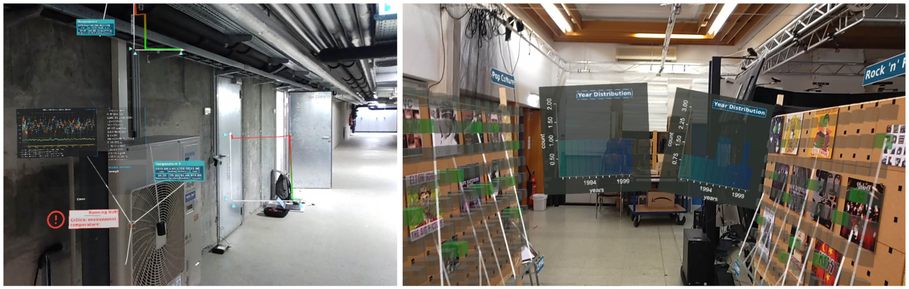

RagRug: A Toolkit for Situated Analytics

Authors. Philipp Fleck, Aimée Sousa Calepso, Sebastian Hubenschmid, Michael Sedlmair, Dieter Schmalstieg
Venue. TVCG (2022)
Abstract. We present RagRug, an open-source toolkit for situated analytics. The abilities of RagRug go beyond previous immersive analytics toolkits by focusing on specific requirements emerging when using augmented reality (AR) rather than virtual reality. RagRug combines state of the art visual encoding capabilities with a comprehensive physical-virtual model, which lets application developers systematically describe the physical objects in the real world and their role in AR. We connect AR visualization with data streams from the Internet of Things using distributed dataflow. To this aim, we use reactive programming patterns so that visualizations become context-aware, i.e., they adapt to events coming in from the environment. The resulting authoring system is low-code; it emphasises describing the physical and the virtual world and the dataflow between the elements contained therein. We describe the technical design and implementation of RagRug, and report on five example applications illustrating the toolkit's abilities.